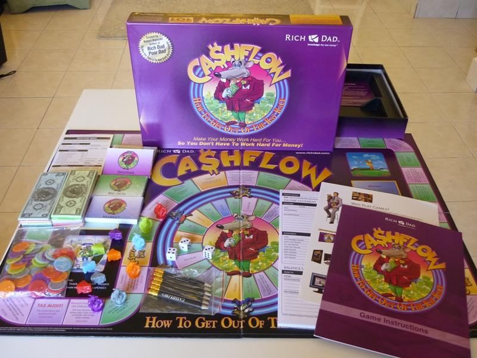
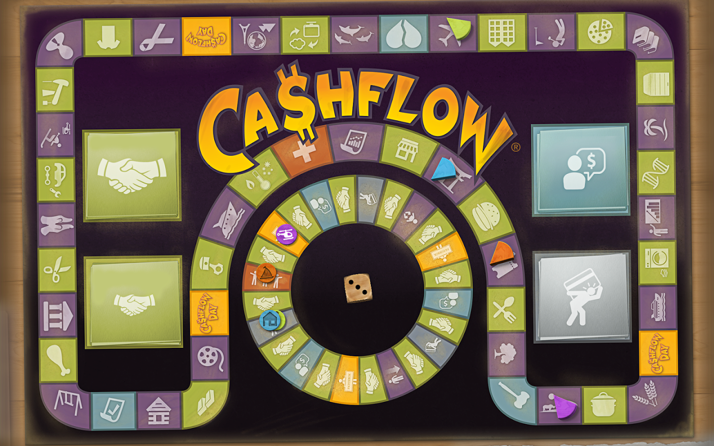
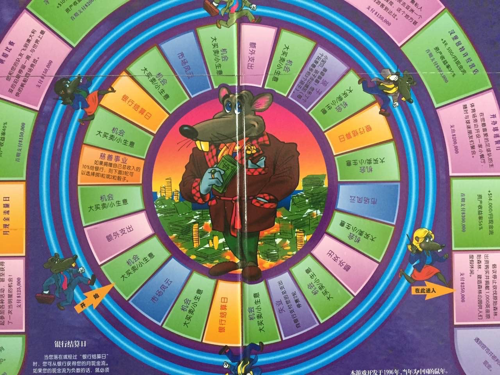
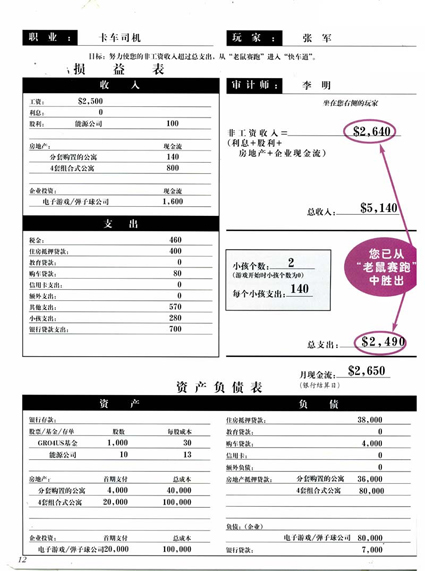

现金流游戏 Cashflow
现金流游戏是《富爸爸穷爸爸》的作者罗伯特清崎开发的，他开发这个游戏的初衷是教育美国人理财，所以刚才大家填写的财务报表里面的数字都是上个世纪80年代美国典型家庭的财务状况，和我们现在情况相差很大，但并不影响我们通过这个游戏来学习投资理财的知识；这个游戏开发出来后被翻译成五十多种语言在一百多个国家传播，很多大型金融机构都会用这个游戏来训练他们专业的投资理财人士；这个游戏大概2001年传到上海，当时像大家这样玩一次游戏的收费是1500元。

游戏面板：


大家看一下这块面板，中间这个圈叫老鼠圈，为什么叫老鼠圈呢？现在不讲，大家可以通过参加游戏来体会。外面整个环形的圈叫做富人圈也叫快车道。大家看老鼠圈里黄色的格子叫做银行结算日，相当于每个月发工资；绿色的格子叫做机会，对应小生意大买卖两种卡片，里面会有股票、基金、房产等投资机会；蓝色的格子叫市场风云，对应市场风云卡，里面会有市场信息，如果你买过里面提到的资产可以根据里面的内容做出相应的投资决定。粉色的格子叫额外支出，对应额外支出卡，通常代表日常基本开支之外的其他分支，所以叫额外支出。大家看，老鼠圈里除了刚才介绍的外还有失业、生孩子和慈善事业，大家有没有觉得老鼠圈和我们的现实生活非常的像啊？
财务报表：

请大家仔细看一下上面这张财务报表。财务报表是这个游戏的精华，无论是这个游戏的开发者罗伯特清崎还是我们所熟知的投资大师如巴菲特、索罗斯、彼得林奇等都会强调财务报表对投资理财的重要性。这是一个简易的家庭财务报表，它主要由两部分构成，损益表和资产负债表。损益表由收入和支出两部分构成，收入的总和等于总收入，支出的总和等于总支出，总收入减去总支出就是月现金流。游戏里每次发工资的时候我给大家的是月现金流而不是总收入，大家可以理解吗？我们看一下，资产负债表是由资产和负债两部分构成。在游戏当中如果买入资产，就有可能带来收入，收入增加总收入也会相应的增加，总收入增加总支出不变月现金流是不是也会相应的增加？在游戏当中产生负债，有可能会带来支出，支出增加总支出也会相应增加，总支出增加总收入不变，月现金流会怎么变化？接下来我们看看什么是财务自由，和财务自由相关的一个词叫做非工资收入。什么是非工资收入呢？就是不用工作就可以赚到的钱。大家思考一下，假如你不用工作每个月都可以收入一笔钱，并且这笔钱大于你每个月家庭的总支出，从某种程度上讲，你是不是就实现了财务自由了呢？怎么获得非工资收入？大家看这里，银行利息、股票红利、房产租金、企业现金流都属于非工资收入。大家在老鼠圈里的目的就是增加你的非工资收入，当你的非工资收入大于你的总支出时，你就实现了财务自由，可以从老鼠圈出来进入快车道了。游戏中我会指导大家如何填写财务报表。